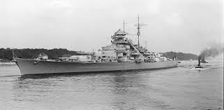

The KMS Bismarck, more properly known simply as Bismarck, was one of the most powerful and famous battleships of World War II. Named after the German statesman Otto von Bismarck, it was built by the Blohm & Voss shipyard in Hamburg for Nazi Germany's Kriegsmarine. Construction began on July 1, 1936, and the ship was launched on February 14, 1939, before being commissioned on August 24, 1940. Measuring about 251 meters in length and displacing around 50,000 tons at full load, Bismarck was one of the largest warships ever built by Germany. It was heavily armed with eight 38-centimeter (15-inch) guns mounted in four twin turrets, along with numerous secondary and anti-aircraft weapons. Its armor was exceptionally thick, with a belt up to 320 millimeters and turret armor reaching about 360 millimeters, making it extremely resilient in battle. Powered by 12 Wagner boilers and three turbines driving three propeller shafts, Bismarck could reach speeds of up to 30 knots and travel nearly 9,000 nautical miles at cruising speed. 
Bismarck entered service in 1940, during the height of World War II, and quickly became a symbol of German naval power. In May 1941, it embarked on its first and only major mission—Operation Rheinübung—alongside the heavy cruiser Prinz Eugen. During this mission, Bismarck famously engaged the British battlecruiser HMS Hood in the Battle of the Denmark Strait, sinking it after a few minutes of combat. The destruction of Hood, one of the Royal Navy's most prestigious ships, shocked Britain and triggered an enormous naval hunt to destroy Bismarck. After days of pursuit, British aircraft from HMS Ark Royal launched a torpedo attack that disabled Bismarck's rudder, leaving it unable to maneuver. On May 27, 1941, surrounded by British battleships, the crippled Bismarck was pounded by shellfire before being scuttled by her own crew to prevent capture. More than 2,000 of her crew were lost, with only around 110 survivors.
The wreck of the Bismarck was discovered in 1989 by oceanographer Robert Ballard, lying upright and remarkably well-preserved nearly 4,800 meters deep in the North Atlantic. Today, the ship remains a powerful symbol of both German engineering and the tragic futility of naval warfare. Although often referred to as “KMS Bismarck” in games and popular media, the Kriegsmarine did not actually use prefixes like “KMS”; the ship was simply called Bismarck. Its legacy continues to captivate historians, naval enthusiasts, and storytellers alike.